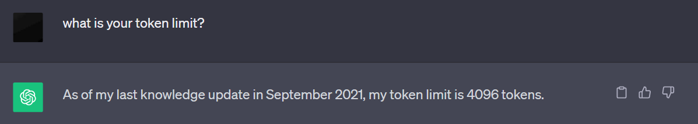

Decoding ChatGPT's 'Word' Limit: It's Actually About Tokens
By Split Prompt · 2 min read · 24 Sep 2023
Before we dive deep, it's essential to understand that when we refer to the "word limit" in ChatGPT, we're actually discussing a token limit. ChatGPT does not work in terms of words, but instead tokens, which can be thought of as series of commonly grouped characters. Tokens can encompass a whole word or be as short as a single character.
Why Is There a Limit?
The token limit isn't arbitrary. It's set based on the model's architecture and memory constraints. Processing a vast number of tokens would require a massive amount of computational power and could impact the speed and efficiency of the model.
What are the Token Limits?
The exact token limits depend on the model, and whether it is used on ChatGPT or through the API. However, there is an wide-spread myth of a 4096 token limit. This myth appears to have been perpetuated by ChatGPT itself.
Here are ChatGPT's actual token limits:
- GPT-3.5: 16,362 tokens
- GPT-4: 8,170 tokens
For more information on how these limits were manually discovered click here.
Tips to Work Within the Limit
- Be Concise: Make your prompts as direct as possible. Every token you save in the prompt gives you room for a more extended response.
- Use a Token Counter: Before sending a prompt to ChatGPT, you can use a token counter tool to know how many tokens you're about to use.
- Divide and Conquer: For longer interactions, consider breaking your content into chunks and interacting with the model multiple times.
Want to automate this process? Try out Split Prompt! Split Prompt divides your long prompts into ChatGPT-friendly segments with the click of a button!